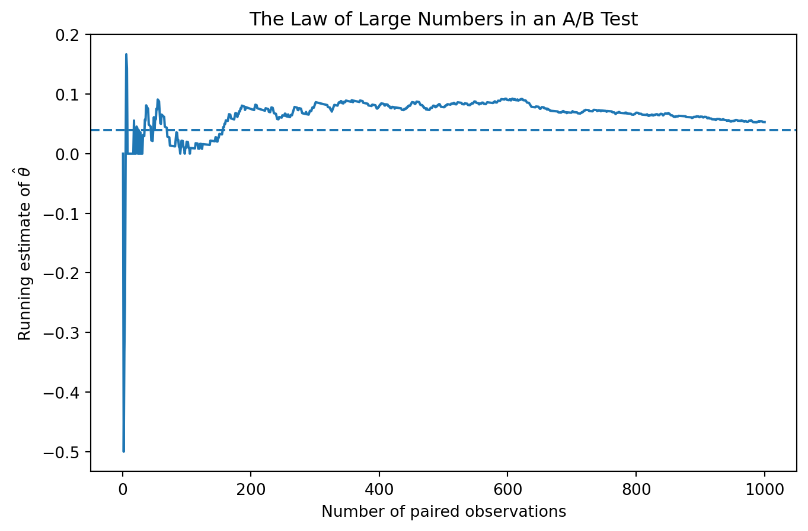
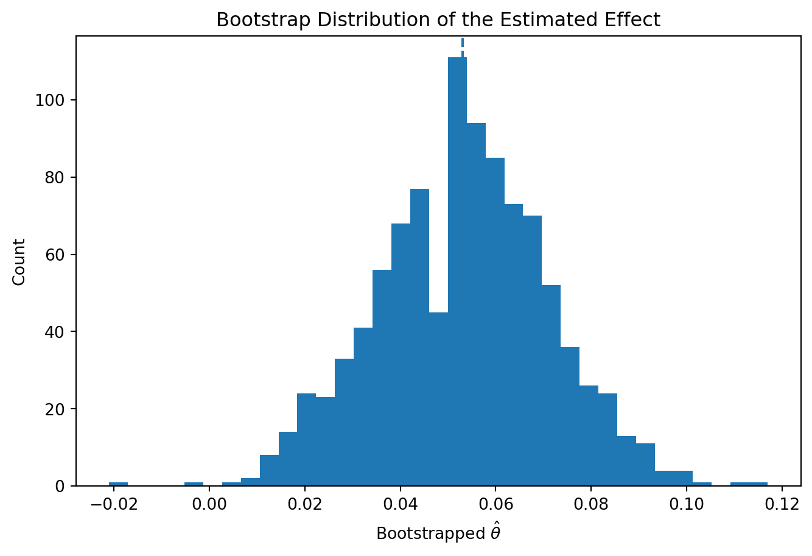

Simulating Key Ideas from Classical Frequentist Statistics
Author
Paola Montejo
Published
April 16, 2026
Introduction
Imagine you run a website with a newsletter signup box on the landing page. You are considering two versions of the call to action, or CTA. CTA A says “Sign up for our newsletter here!” and CTA B says “Stay up to date by signing up!” The goal is to figure out which message leads to more newsletter sign-ups.
A natural way to answer that question is with an A/B test. Visitors are randomly assigned to see one of the two CTAs, and then we compare the sign-up rates across the two groups. Random assignment matters because it helps make the two groups comparable. If one CTA gets a higher sign-up rate, we have a stronger case that the wording itself caused the difference.
In this post, I use a simulated A/B test to walk through several core ideas from classical frequentist statistics: estimation, the Law of Large Numbers, bootstrap standard errors, the Central Limit Theorem, hypothesis testing, the regression interpretation of a two-sample test, and why “peeking” at results can get you into trouble.
The A/B Test as a Statistical Problem
For each visitor, the outcome is binary: either they sign up for the newsletter or they do not. That means each observation can be modeled as a draw from a Bernoulli distribution, where the parameter \(\) is the probability of signing up.
Because the CTA wording may affect behavior, I allow the sign-up probability to differ across groups. Visitors who see CTA A have sign-up probability \(_A\), and visitors who see CTA B have sign-up probability \(_B\).
The quantity I care about is the difference in sign-up rates:
\[ = _A - _B \]
A natural estimator is the difference in sample means:
\[ = {X}_A - {X}_B \]
Because the outcomes are 0 or 1, each sample mean is also a sample proportion.
Simulating Data
In a real A/B test, we would not know the true values of \(_A\) and \(_B\). For this exercise, I set them myself so I can study how the estimator behaves when the truth is known.
Suppose the true sign-up rates are \(_A = 0.22\) and \(_B = 0.18\). Then the true difference is:
The Law of Large Numbers says that as the sample size grows, the sample mean converges to the population mean. In this setting, that gives us confidence that \(\) will get closer to the true \(\) as more observations arrive.
diffs = A - Brunning_mean = np.cumsum(diffs) / np.arange(1, n +1)plt.figure(figsize=(8, 5))plt.plot(np.arange(1, n +1), running_mean)plt.axhline(theta_true, linestyle="--")plt.title("The Law of Large Numbers in an A/B Test")plt.xlabel("Number of paired observations")plt.ylabel(r"Running estimate of $\hat{\theta}$")plt.show()

At the beginning, the estimate is noisy. As the sample size grows, the running average settles down and moves closer to the true difference of 0.04.
Bootstrap Standard Errors
A point estimate is useful, but it does not tell us how uncertain we are. The bootstrap is a resampling method that estimates variability by repeatedly resampling from the observed data with replacement.
The bootstrap and analytical standard errors should be close. That tells us the resampling approach is producing a sensible estimate of uncertainty.
plt.figure(figsize=(8, 5))plt.hist(boot_thetas, bins=35)plt.axvline(theta_hat, linestyle="--")plt.title("Bootstrap Distribution of the Estimated Effect")plt.xlabel(r"Bootstrapped $\hat{\theta}$")plt.ylabel("Count")plt.show()

A 95% confidence interval based on the bootstrap standard error runs from about ci_lower to ci_upper. If that interval stays above zero, it suggests CTA A likely performs better than CTA B.
The Central Limit Theorem
The Central Limit Theorem says that as the sample size grows, the sampling distribution of the sample mean becomes approximately Normal. The same idea applies to the difference in sample means.
At small sample sizes, the histograms are rougher. As the sample size increases, they become smoother and more bell-shaped, illustrating the Central Limit Theorem.
Hypothesis Testing
To formally test whether the two CTAs perform differently, I test:
The coefficient on the treatment indicator is the same treatment effect estimated earlier using the difference in means.
The Problem with Peeking
Peeking means checking for significance repeatedly before the planned sample is complete. That inflates the false positive rate because each peek is another chance to get a statistically significant result by luck.
When repeated testing raises the false positive rate above 5%, it means you are more likely to declare a winner even when no real difference exists.
Conclusion
This A/B testing example shows how frequentist tools help translate webpage experiments into statistical decisions. The difference in means estimates the treatment effect, large-sample theory explains why that estimate becomes reliable, and standard errors and hypothesis tests quantify uncertainty. Just as importantly, the peeking example shows that statistical validity depends not only on the formulas we use, but also on following the experimental design we planned in advance.